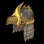

Ukážky niektorých nových predmetov
aaa aaa

Griffon Gaze
Sky Spirit
Defense:
433
Durability: 15 of 20
(Druid Only)
Required Strength: 113
Required Level: 62
Strength stat increases raven damage by 2%
+30% Faster Hit Recovery
adds 50-200 lightning damage
-13% to enemy lightning resistance
+178% enhanced defense
+23 to Strength
+96 to Life
Lightning resist +41%
Ukážka myšou na predmety zobrazí info.
test link.